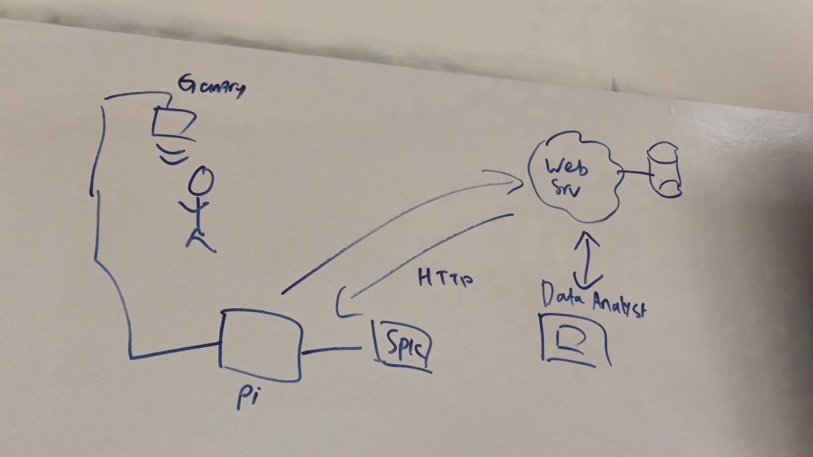
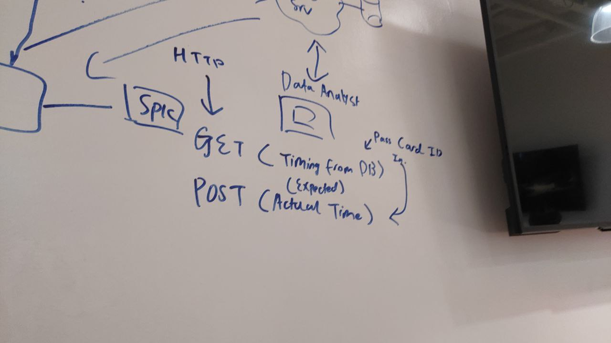
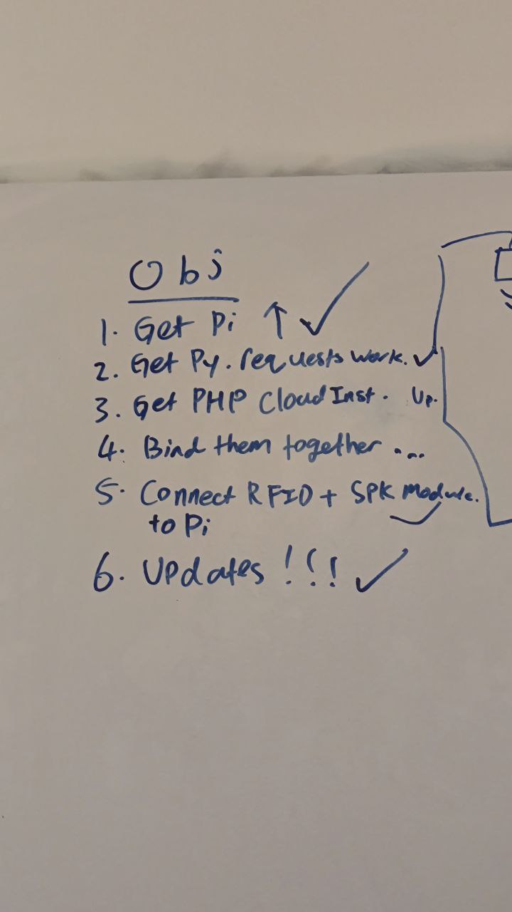
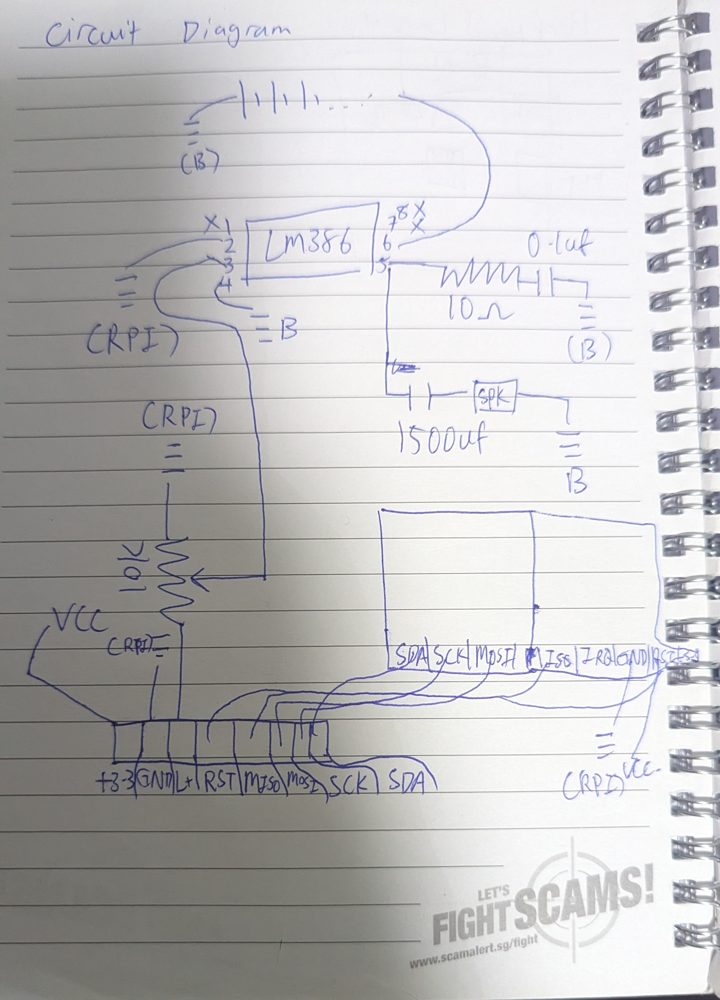
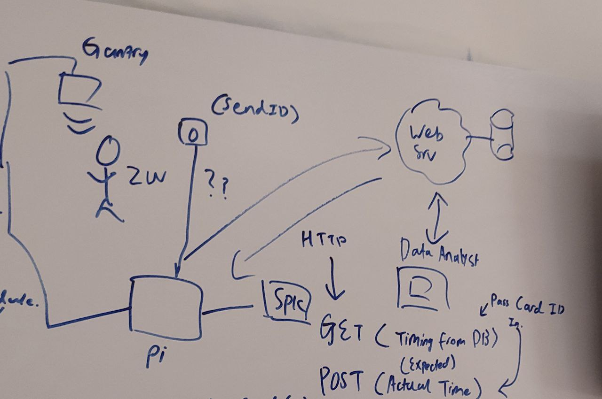
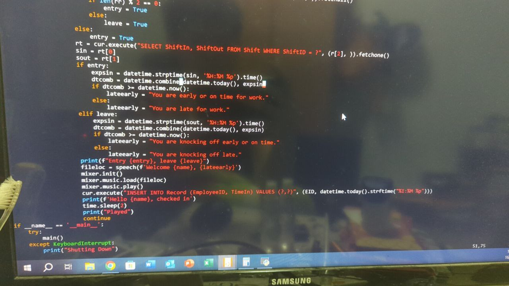
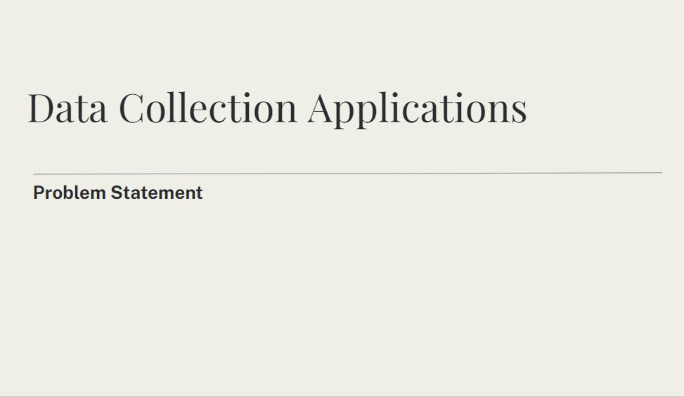
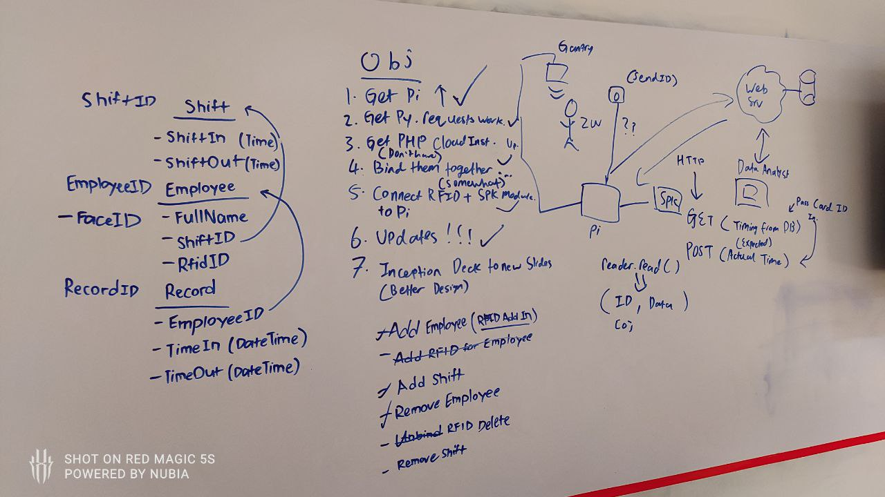
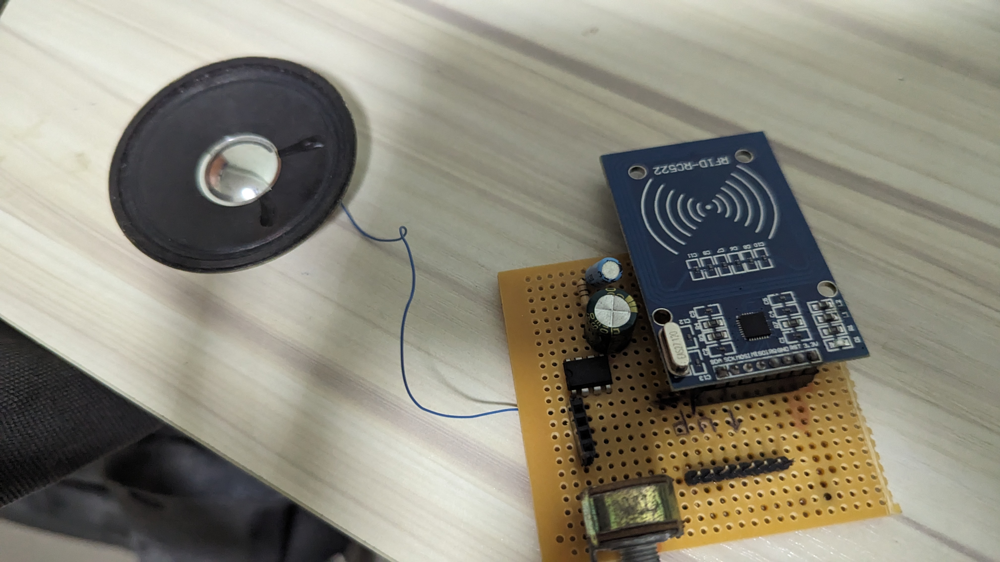

Welcome back to my blog, where I will be summarising the events that has happened during the hackathon.
For the first day, we were all seated at Blk 27 Level 5, or as we NP ICT Students know as the Grasspatch,
where we are welcomed to the hackathon. There we also see our Director of School of ICT (Dr Joel Yang),
who was our WEB lecturer last semester. After this, we headed back to our brainstorming room, where I drew
the overall diagram of the project (consisting of the gantry, Raspberry Pi, Speaker, Web Instance,
and Tableau at the data analyst end). After this, I went to work, while my other group members handled the
other aspects of the project (from command line Python console, for DB Administration,
to generating data for the database), I worked on the main aspect of the system, the Raspberry Pi, on the
day itself. I started with loading a Pi OS Lite image onto the Raspberry Pi's Micro SD Card,
unfortunately I had brought a slower USB SD card reader and it took a few times, I had went through some
issues where the Pi was unable to connect to my WiFi hotspot, and had trouble with the Raspberry Pi Imager,
after a few write attempts (due to thinking it may have not received the WiFi credentials correctly), I dug
through my bag and found an ESP32 development board, which contained a USB to UART adapter onboard, I used the
Jumper Wire to short the RST (Reset) pin to GND (Ground) to force the Microcontroller into a RESET state, allowing
me to use the ESP32 as a simple UART adapter to talk to the Raspberry Pi. This allowed me to configure the Pi
enough for an sudo apt update && sudo apt upgrade, after that I managed to use my RFID module (small one, since AIDC did not provide any hardware),
LM386 Operational Amplifer, 3.7v Lithum Polymer Battery, Speaker, and HuskeyLens (ML detection of face) (Thanks again Mr Ben).
I was able to configure it to work properly and all parts of the project worked independently.
This completed Objectives 1, 5, 6, "Get Pi up", "Connect components together" and "Updates!!!" (Updates to the Pi) respectively.
After the first day, I went back to home, and sketched out the circuit diagram below (3rd picture).
Where I placed the components onto the perfboard, integrating the speaker amplifier, card reader onto a singular board,
connected via Jumper Cables. (End product on the last picture) (Took me a couple of hours).
Each component used a different protocol to communicate to the Raspberry Pi.
Unfortunately, when it came to testing on Hackathon Day 2, the Speaker did work as expected, but the RFID reader did not work with the test program, I had anticipated some troubleshooting was required, so I brought my Multi-meter along, which using it's continuity test function, shown that a small solder bridge had formed between MOSI (Master Out Slave In) pin and GND (Ground) during soldering, inhibiting the RFID reader's functionality. Since it was quite a small solder bridge, I managed to "flick" it off using a small tweezer. Allowing the project to work as expected.
I had previously discovered that the RFID card has a unique ID, which is an integer, and the HuskeyLens has a small Database of faces in the memory of the device, which will output an ID, thus, we also added these 2 columns in the SQL Database (after discussion with my teammates). This will help my application to detect which employee entered the building with a sort of "Two-Factor Authentication".
Since AIDC had not provided us with any Cloud Instances, we could not integrate the HTTP requests properly in our
End-Device, therefore I resorted to use a small SQLite database, which is replicating the actual schema of the database
that will be placed in production, and manually used SELECT and INSERT INTO commands to write
to the Database, for the Demo of the project on day 3.
In addition ot the "Hello {name}" speech when clocking in, I also made use of the Shift Table, which also lets the employee know if he/she is Late or Early for work.
For the explaination of the code, the main script continously queries the I2C bus for the HuskeyLens,
and asks if it has any recognised faces in its current frame, if there is, get the FaceID of the person and send
it into Python, then it queries the database via SELECT RfidID FROM Employee WHERE FaceID = ?, which means
it will acquire the RFID ID number of the employee, when the employee taps his/her card at this point, it will compare
the CardID of the card at the reader, to the database, if it is the same, it will fetch the employee's name and EmployeeID
via SELECT * FROM Employee WHERE RfidID = ?. It will also check how many records are present under
the employee's name, if the number of records are even, the employee is entering, else he/she is leaving, and will
fetch the employee's Shift via SELECT ShiftIn, ShiftOut FROM Shift WHERE ShiftID = ?, and will compare
the current time and either ShiftIn/Out depending on whether entry or exit, and will tell you whether, you
are early/late for work, knocking off early/late and will insert record into database via INSERT INTO Record (EmployeeID, TimeIn) VALUES (?,?).
Lastly, our team worked on the PowerPoint slides, which we used to present to AIDC about our solution, with some practical Demo that we used to prove our prototype worked as expected.
EDIT: In the break period, we will be working more on cloud end, PHP for API to Pi, and ASP.NET Core for the Admin Panel.
        